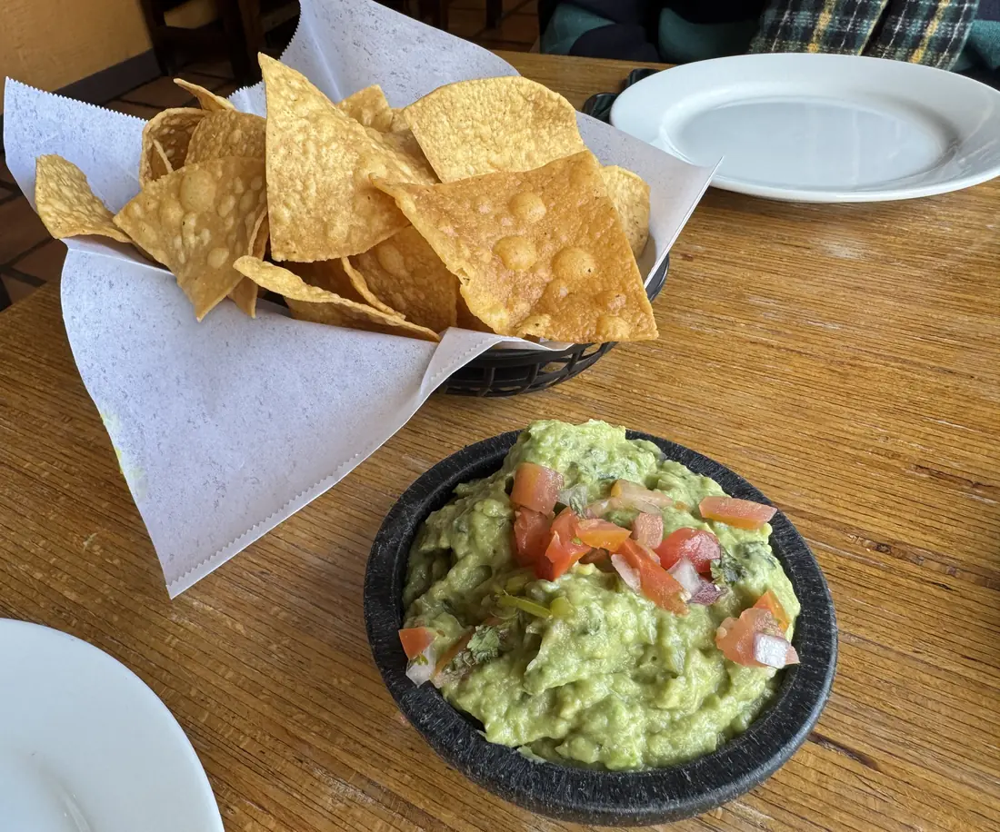
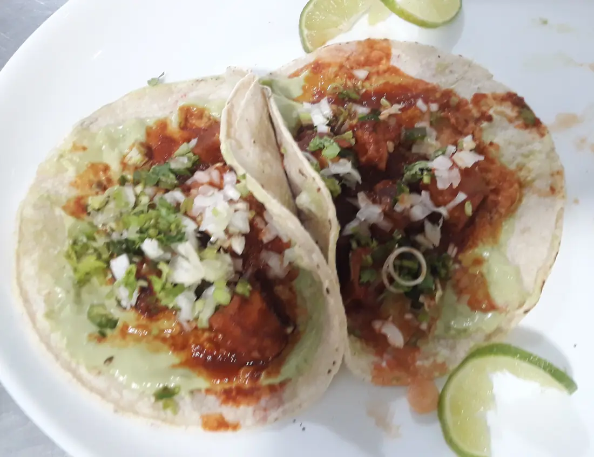
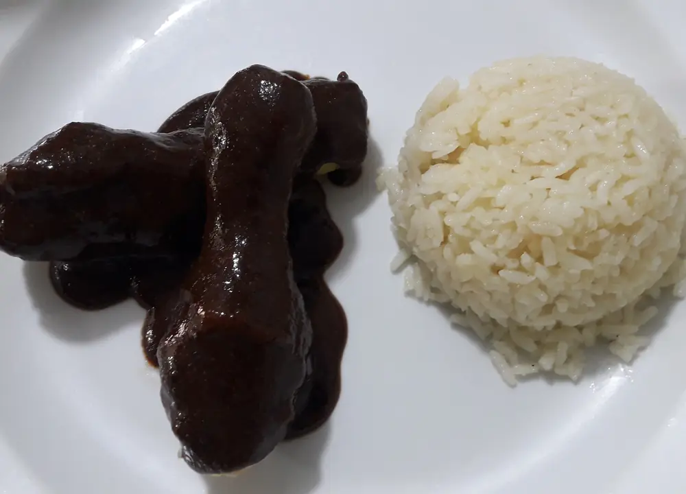
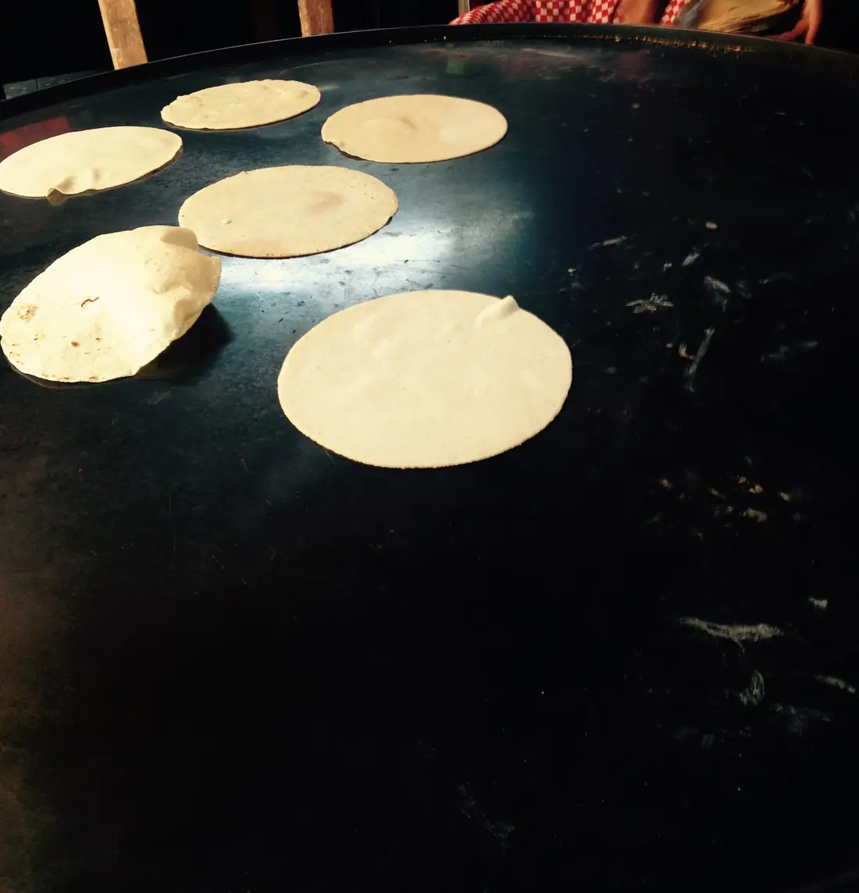
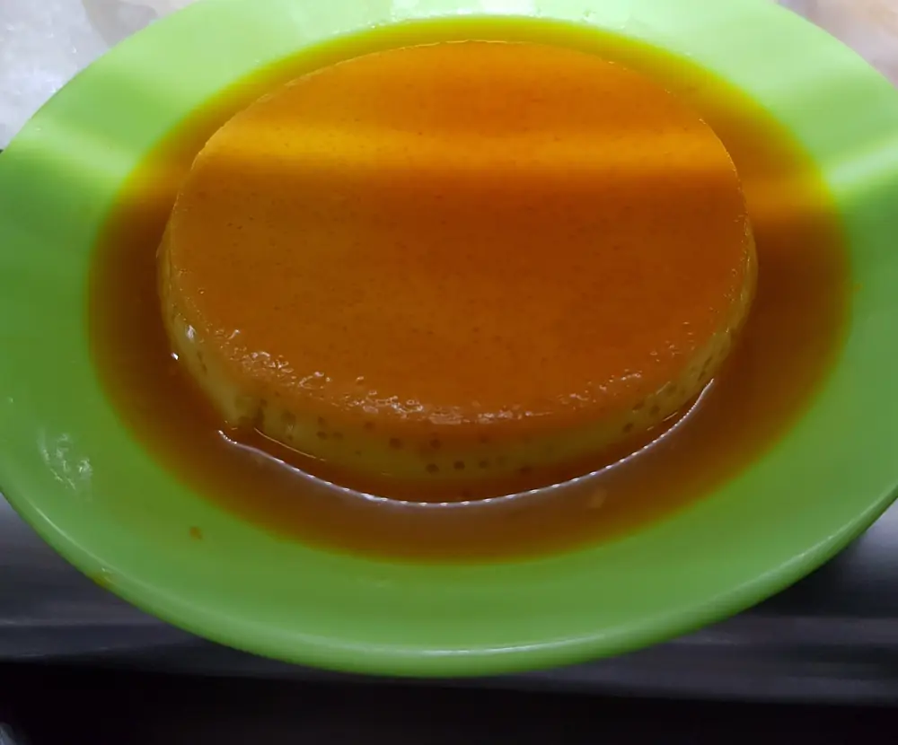

El menú
Todo se hace aquí, desde las tortillas hasta el mole. Los precios incluyen nuestras salsas; pide la que pica.
Video de muestra en lugar del video con IA de este plan.
Antojitos
Para empezar o para compartir en la barra.

Guacamole de molcajeteVegetariano
$11Aguacate, serrano, cebolla, cilantro y limón, martajado al momento. Totopos hechos aquí.
Queso fundido
$12Queso Chihuahua fundido con chorizo de la casa y tortillas de harina.
Sopes de cochinita
$10Dos sopes de masa con frijol, cochinita en achiote y cebolla morada curtida.
Aguachile verde
$16Camarón curtido en limón y serrano, pepino, cebolla morada y tostadas.
Elote asadoVegetariano
$6Elote asado con mayonesa, queso cotija, chile piquín y limón.
Tacos
Orden de tres, en tortilla de maíz hecha a mano todo el día.

Al pastor
$13Cerdo adobado, piña, cebolla, cilantro y salsa roja.
Arrachera
$15Arrachera al carbón de mezquite, cebollita asada y salsa de molcajete.
Pulpo enchilado
$17Pulpo en guajillo, crema de aguacate y cebolla curtida.
Carnitas
$13Carnitas confitadas en su propia manteca, salsa verde cruda y chicharrón.
Hongos y rajasVegetariano
$12Hongos y rajas de poblano con crema y queso fresco.
Platos fuertes
Con arroz, frijoles de la olla y canasta de tortillas.

Molcajete MolinaPara dos
$42Arrachera, pollo adobado, chorizo, nopales, cebollitas y queso panela, hirviendo en salsa dentro del molcajete de piedra.
Mole negro
$21Pierna de pollo en el mole negro oaxaqueño de doña Rosa, con ajonjolí.
Cochinita pibil
$19Cochinita al estilo Yucatán en achiote y naranja agria, envuelta en hoja de plátano, con cebolla y habanero.
Chile rellenoVegetariano
$17Chile poblano asado relleno de queso, en caldillo de jitomate, con crema.
Enchiladas de birria
$19Birria de res en tortillas bañadas en chile rojo, con queso y su consomé aparte.
Tamales oaxaqueños
$14Dos tamales en hoja de plátano, de mole negro o de rajas.
Pozole rojoSáb y dom
$15Cerdo y maíz pozolero en caldo de chile rojo, con col, rábano, orégano y tostadas.
Del comal
Guarniciones y algo para los niños.

Tortillas a manoMedia docena
$3De maíz, hechas al momento.
Arroz rojo
$4Arroz con jitomate y un toque de serrano.
Frijoles de la olla
$4Frijol pinto de la olla con epazote.
Nopales asados
$5Nopales a la parrilla con queso fresco.
Quesadilla o taquitos para niñosMenores de 12
$7Con arroz, frijoles y agua fresca.
Postres
Hechos en la mañana; para la noche ya no hay.

Flan de la casa
$8Flan de vainilla con caramelo oscuro.
Churros con cajeta
$8Con azúcar y canela, y cajeta para remojar.
Pastel de tres leches
$9Pan empapado en tres leches con canela.
Avísanos de cualquier alergia al ordenar; la cocina puede ajustar casi todos los platillos. Precios sin impuesto. Para mesas de ocho o más se agrega 18% de propina.